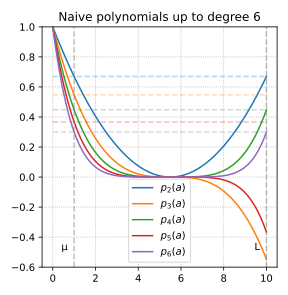
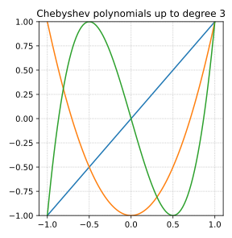
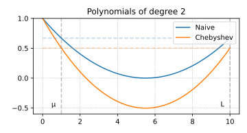
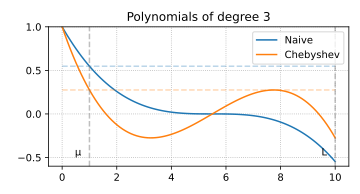
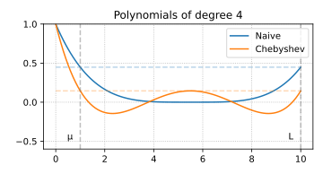
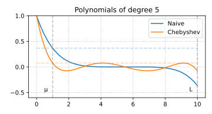
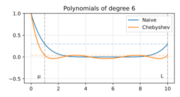

Chebyshev’s acceleration of gradient descent
Suppose, we have a strongly convex quadratic function minimization problem solved by the gradient descent method:
f(x) = \frac{1}{2} x^T A x - b^T x \qquad x_{k+1} = x_k - \alpha_k \nabla f(x_k).
Let x^* be the unique solution of the linear system Ax=b and put e_k = \|x_k-x^*\|, where x_{k+1}=x_k - \alpha_k (Ax_k-b) is defined recursively starting from some x_0, and \alpha_k is a step size we’ll determine shortly. e_{k+1} = (I-\alpha_k A)e_k.
1 Polynomials
The above calculation gives us e_k = p_k(A)e_0,
where p_k is the polynomial p_k(a) = \prod_{i=1}^k (1-\alpha_ka). We can upper bound the norm of the error term as \|e_k\|\le \|p_k(A)\|\cdot\|e_0\|\,.
Since A is a symmetric matrix with eigenvalues in [\mu,L],: \|p_k(A)\|\le \max_{\mu\le a\le L} \left|p_k(a)\right|\,. This leads to an interesting problem: Among all polynomials that satisfy p_k(0)=1 we’re looking for a polynomial whose magnitude is as small as possible in the interval [\mu, L].
2 Naive polynomial solution
A naive solution is to choose a uniform step size \alpha_k=\frac{2}{\mu+L} in the expression. This choice makes |p_k(\mu)| = |p_k(L)|. \|e_k\|\le \left(1-\frac1{\varkappa}\right)^k\|e_0\| This is exactly the rate we proved in the previous lecture for any smooth and strongly convex function.
Let’s look at this polynomial a bit closer. In the figure, we choose \alpha=1 and \beta=10 so that \kappa=10. The relevant interval is therefore [1,10].
Can we do better? The answer is yes.

3 Chebyshev polynomials
Chebyshev polynomials turn out to give an optimal answer to the question that we asked. Suitably rescaled, they minimize the absolute value in a desired interval [\mu, L] while satisfying the normalization constraint of having value 1 at the origin.
\begin{aligned} T_0(x) &= 1\\ T_1(x) &= x\\ T_k(x) &=2xT_{k-1}(x)-T_{k-2}(x),\qquad k\ge 2.\\ \end{aligned}
Let’s plot the standard Chebyshev polynomials (without rescaling):

4 Rescaled Chebyshev polynomials
Original Chebyshev polynomials are defined on the interval [-1,1]. To use them for our purposes, we must rescale them to the interval [\mu, L].
We will use the following affine transformation to map our interval [\mu, L] to the standard interval [-1,1] where Chebyshev polynomials are defined: x = \frac{L + \mu - 2a}{L - \mu}, \quad a \in [\mu,L], \quad x \in [-1,1].
Note, that x=1 corresponds to a=\mu, x=-1 corresponds to a=L and x=0 corresponds to a=\frac{\mu+L}{2}. This transformation ensures that the behavior of the Chebyshev polynomial on [-1,1] is reflected on the interval [\mu, L]
In our error analysis, we require that the polynomial equals 1 at 0 (i.e., p_k(0)=1). After applying the transformation, the value T_k takes at the point corresponding to a=0 might not be 1. Thus, we multiply by the inverse of T_k evaluated at \frac{L+\mu}{L-\mu}, \qquad \text{ensuring that} \qquad P_k(0)= T_k\left(\frac{L+\mu-0}{L-\mu}\right) \cdot T_k\left(\frac{L+\mu}{L-\mu}\right)^{-1} = 1.
Let’s plot the rescaled Chebyshev polynomials P_k(a) = T_k\left(\frac{L+\mu-2a}{L-\mu}\right) \cdot T_k\left(\frac{L+\mu}{L-\mu}\right)^{-1} and observe, that they are much better behaved than the naive polynomials in terms of the magnitude in the interval [\mu, L].
5 Rescaled Chebyshev polynomials





6 Chebyshev polynomials upper bound
We can see, that the maximum value of the Chebyshev polynomial on the interval [\mu, L] is achieved at the point a=\mu. Therefore, we can use the following upper bound: \|P_k(A)\|_2 \le P_k(\mu) = T_k\left(\frac{L+\mu-2\mu}{L-\mu}\right) \cdot T_k\left(\frac{L+\mu}{L-\mu}\right)^{-1} = T_k\left(1\right) \cdot T_k\left(\frac{L+\mu}{L-\mu}\right)^{-1} = T_k\left(\frac{L+\mu}{L-\mu}\right)^{-1} Using the definition of condition number \varkappa = \frac{L}{\mu}, we get: \|P_k(A)\|_2 \le T_k\left(\frac{\varkappa+1}{\varkappa-1}\right)^{-1} = T_k\left(1 + \frac{2}{\varkappa-1}\right)^{-1} = T_k\left(1 + \epsilon\right)^{-1}, \quad \epsilon = \frac{2}{\varkappa-1}.
Therefore, we only need to understand the value of T_k at 1+\epsilon. This is where the acceleration comes from. We will bound this value with \mathcal{O}\left(\frac{1}{\sqrt{\epsilon}}\right).
7 Chebyshev polynomials upper bound
To upper bound |P_k|, we need to lower bound |T_k(1 + \epsilon)|.
For any x\ge 1, the Chebyshev polynomial of the first kind can be written as \begin{aligned} T_k(x)&=\cosh\left(k\,\mathrm{arccosh}(x)\right)\\ T_k(1+\epsilon)&=\cosh\left(k\,\mathrm{arccosh}(1+\epsilon)\right). \end{aligned}
Recall that: \cosh(x)=\frac{e^x+e^{-x}}{2} \quad \mathrm{arccosh}(x) = \ln(x + \sqrt{x^2-1}).
Now, letting \phi=\mathrm{arccosh}(1+\epsilon), e^{\phi}=1+\epsilon + \sqrt{2\epsilon+\epsilon^2} \geq 1+\sqrt{\epsilon}.
Therefore, \begin{aligned} T_k(1+\epsilon)&=\cosh\left(k\,\mathrm{arccosh}(1+\epsilon)\right) \\ &= \cosh\left(k\phi\right) \\ &= \frac{e^{k\phi} + e^{-k\phi}}{2} \geq\frac{e^{k\phi}}{2} \\ &= \frac{\left(1+\sqrt{\epsilon}\right)^k}{2}. \end{aligned}
Finally, we get: \begin{aligned} \|e_k\| &\leq \|P_k(A)\| \|e_0\| \leq \frac{2}{\left(1 + \sqrt{\epsilon}\right)^k} \|e_0\| \\ &\leq 2 \left(1 + \sqrt{\frac{2}{\varkappa-1}}\right)^{-k} \|e_0\| \\ &\leq 2 \exp\left( - \sqrt{\frac{2}{\varkappa-1}} k\right) \|e_0\| \end{aligned}
8 Accelerated method
Due to the recursive definition of the Chebyshev polynomials, we directly obtain an iterative acceleration scheme. Reformulating the recurrence in terms of our rescaled Chebyshev polynomials, we get: T_{k+1}(x) =2xT_{k}(x)-T_{k-1}(x) Given the fact, that x = \frac{L+\mu-2a}{L-\mu}, and:
\begin{aligned} P_k(a) &= T_k\left(\frac{L+\mu-2a}{L-\mu}\right) T_k\left(\frac{L+\mu}{L-\mu}\right)^{-1}\\ T_k\left(\frac{L+\mu-2a}{L-\mu}\right) &= P_k(a) T_k\left(\frac{L+\mu}{L-\mu}\right) \end{aligned}
\begin{aligned} T_{k-1}\left(\frac{L+\mu-2a}{L-\mu}\right) &= P_{k-1}(a) T_{k-1}\left(\frac{L+\mu}{L-\mu}\right) \\ T_{k+1}\left(\frac{L+\mu-2a}{L-\mu}\right) &= P_{k+1}(a) T_{k+1}\left(\frac{L+\mu}{L-\mu}\right) \end{aligned}
\begin{aligned} P_{k+1}(a) t_{k+1} &= 2 \frac{L+\mu-2a}{L-\mu} P_{k}(a) t_{k} - P_{k-1}(a) t_{k-1} \text{, where } t_{k} = T_{k}\left(\frac{L+\mu}{L-\mu}\right) \\ P_{k+1}(a) &= 2 \frac{L+\mu-2a}{L-\mu} P_{k}(a) \frac{t_{k}}{t_{k+1}} - P_{k-1}(a) \frac{t_{k-1}}{t_{k+1}} \end{aligned}
Since we have P_{k+1}(0) = P_{k}(0) = P_{k-1}(0) = 1, we can find the method in the following form: P_{k+1}(a) = (1 - \alpha_k a) P_k(a) + \beta_k \left(P_{k}(a) - P_{k-1}(a) \right).
Rearranging the terms, we get: \begin{aligned} P_{k+1}(a) &= (1 + \beta_k) P_k(a) - \alpha_k a P_k(a) - \beta_k P_{k-1}(a),\\ P_{k+1}(a) &= 2 \frac{L+\mu}{L-\mu} \frac{t_{k}}{t_{k+1}} P_{k}(a) - \frac{4a}{L-\mu} \frac{t_{k}}{t_{k+1}}P_{k}(a) - \frac{t_{k-1}}{t_{k+1}} P_{k-1}(a) \end{aligned}
\begin{cases} \beta_k = \dfrac{t_{k-1}}{t_{k+1}}, \\[6pt] \alpha_k = \dfrac{4}{L-\mu} \dfrac{t_k}{t_{k+1}}, \\[6pt] 1 + \beta_k = 2 \dfrac{L + \mu}{L - \mu} \dfrac{t_k}{t_{k+1}} \end{cases}
We are almost done :) We remember, that e_{k+1} = P_{k+1}(A) e_0. Note also, that we work with the quadratic problem, so we can assume x^* = 0 without loss of generality. In this case, e_0 = x_0 and e_{k+1} = x_{k+1}. \begin{aligned} x_{k+1} &= P_{k+1}(A) x_0 = (I - \alpha_k A) P_k(A) x_0 + \beta_k \left(P_{k}(A) - P_{k-1}(A) \right) x_0 \\ &= (I - \alpha_k A) x_k + \beta_k \left(x_k - x_{k-1}\right) \end{aligned}
For quadratic problem, we have \nabla f(x_k) = A x_k, so we can rewrite the update as: \boxed{ x_{k+1} = x_k - \alpha_k \nabla f(x_k) + \beta_k \left(x_k - x_{k-1}\right) }
The following visualization demonstrates the convergence behavior of the Chebyshev-accelerated gradient descent compared to standard gradient descent: